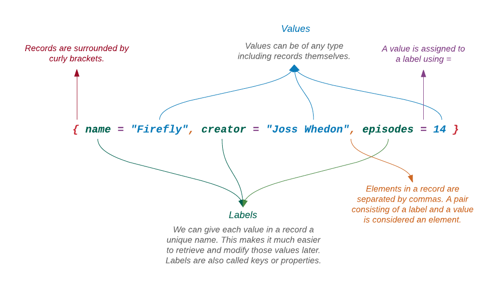
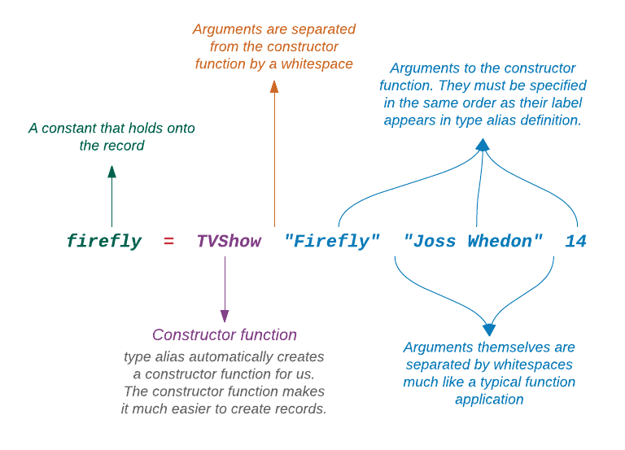
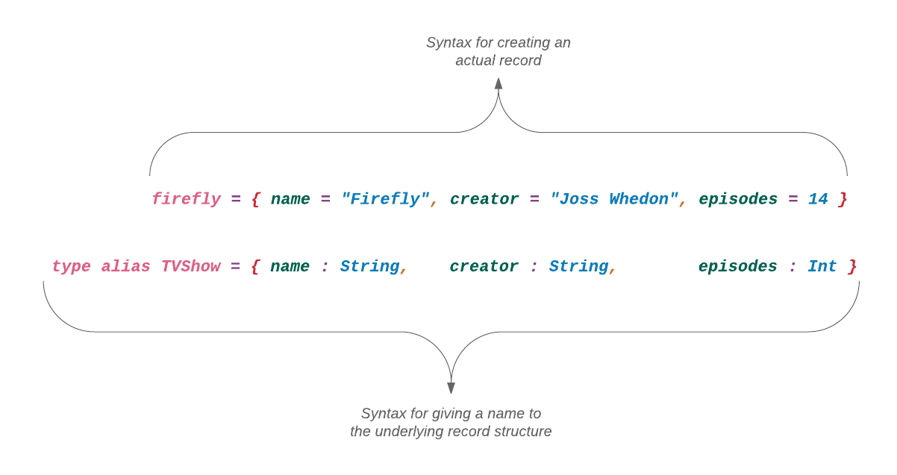
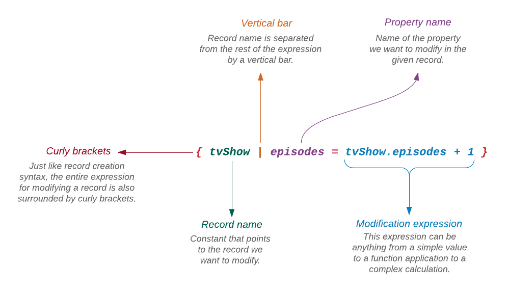

Stejně jako entice mohou záznamy (records) obsahovat hodnoty různého typu, avšak jsou mnohem flexibilnější než entice.
Vytvoření záznamu
Záznamy se píší do složených závorek a jejich elementy jsou odděleny čárkami.
> { name = "Firefly", creator = "Joss Whedon", episodes = 14 }
{ name = "Firefly", creator = "Joss Whedon", episodes = 14 }Na rozdíl od datových struktur které jsme dosud poznali, nám záznamy umožňují dávat jména hodnotám jednotlivých elementů.

Přiřaďme výše uvedený záznam konstantě a vytvořme několik dalších.
> firefly = { name = "Firefly", creator = "Joss Whedon", episodes = 14 }
{ name = "Firefly", creator = "Joss Whedon", episodes = 14 }
> fringe = { name = "Fringe", creator = "J. J. Abrams", episodes = 100 }
{ name = "Fringe", creator = "J. J. Abrams", episodes = 100 }
> vice = { name = "Vice", creator = "Shane Smith", episodes = 58 }
{ name = "Vice", creator = "Shane Smith", episodes = 58 }Vytvořili jsme tři záznamy s informacemi o populární televizní show. Vložme je všechny do seznamu:
> tvShows = [ firefly, fringe, vice ]
...Zde je výstup po určitém formátování kvůli lepšímu vzhledu:
[
{ name = "Firefly",
creator = "Joss Whedon",
episodes = 14
},
{ name = "Fringe",
creator = "J. J. Abrams",
episodes = 100
},
{ name = "Vice",
creator = "Shane Smith",
episodes = 58
}
]Vytváření záznamů pomocí literální syntaxe (t.j. se složenými závorkami) může být únavné. Existuje lepší způsob? Zjistěmež to. Nejprve dejme struktuře, které podléhá každý ze tří právě vytvořených záznamů, jméno.
> type alias TVShow = { name : String, creator : String, episodes : Int }Idiom type alias přiřazuje jméno TVShow deklarovanému typu. Nyní můžeme pomocí tohoto typu vytvářet záznamy mnohem jednodušeji.
> firefly = TVShow "Firefly" "Joss Whedon" 14
{ name = "Firefly", creator = "Joss Whedon", episodes = 14 }
> fringe = TVShow "Fringe" "J. J. Abrams" 100
{ name = "Fringe", creator = "J. J. Abrams", episodes = 100 }
> vice = TVShow "Vice" "Shane Smith" 58
{ name = "Vice", creator = "Shane Smith", episodes = 58 }S touto novou syntaxí se záznamy vytvářejí uvedením jména TVShow, následovaného názvem, tvůrcem a počtem episod. Tato syntaxe je povědomá, není-liž pravda? Je to vpodstatě aplikace funkce. Idiom type alias vytvořil pojmenovanou funkci pro vytváření záznamů s danou strukturou.

Je důležité poznamenat, že při použití type alias pro deklaraci struktury záznamu, musíme použít : nikoliv = k oddělení názvů vlastností a jejich typů.

Přístup k hodnotám
Záznamy jsou hodnoty jako všechno jiné v Elmu. Můžeme je zadat funkci jako argument, upravovat je a vracet zpět. Vytvořme funkci, která ověří, zda záznam pro TV show má tvůrce.
> hasCreator tvShow = String.length tvShow.creator > 0
<function>
> hasCreator firefly
True
> got = TVShow "Game of Thrones" "" 60
{ name = "Game of Thrones", creator = "", episodes = 60 }
> hasCreator got
FalseFunkce hasCreator přistupuje k hodnotě vlastnosti creator s použitím tečkové notace. Zde je několik dalších příkladů:
> firefly.name
"Firefly"
> firefly.creator
"Joss Whedon"
> firefly.episodes
14Specielní přístupové funkce
Druhý způsob přístupu k elementu v záznamu je s pomocí specielní funkce.
> .name firefly
"Firefly"
> .creator firefly
"Joss Whedon"
> .episodes firefly
14Specielním formátem tečkové notace jsou specielní funkce .name, .creator a .episodes, vytvořené za scénou při deklaraci záznamu. Jsou dostupné i když při vytváření záznamu použijeme literálovou syntaxi místo konstruktorové funkce. Tyto fukce se však netvoří při použití idiomu type alias.
> wire = { name = "The Wire", creator = "David Simon", episodes = 60 }
{ name = "The Wire", creator = "David Simon", episodes = 60 }
> .name wire
"The Wire"
> .creator wire
"David Simon"
> .episodes wire
60Proč jim řákáme specielní funkce? Za prvé, začínají tečkou. Normální funkce nesmí začínat specielním znakem. Za druhé, mohou být použity pouze u záznamu, který disponuje označením, shodujícím se s názvem specielní funkce. Zkusme je použít pro přístup k hodnotě v záznamu, která nemá stejné označení.
> sapiens = { name = "Sapiens", author = "Yuval Harari", published = 2015 }
{ name = "Sapiens", author = "Yuval Harari", published = 2015 }
> .creator sapiens
------------------ TYPE MISMATCH --------------------
The argument to this function is causing a mismatch.
8| .creator sapiens
^^^^^^^
This function is expecting the argument to be:
{ b | creator : ... }
But it is:
{ author : ..., name : ..., published : ... }Což takhle .name? Oba záznamy mají označení s názvem name.
> .name sapiens
"Sapiens"To chodí, protože funkce .name není vázána k žádnému ze záznamů, vytvořených před sapiens (?až na name.wire). Jediné, o co se zajímá je to, zda má záznam označení (label) name či nikoliv. Tyto specielní funkce jsou v podstatě ekvivalentní k:
.name = (\record -> record.name)
.creator = (\record -> record.creator)
.episodes = (\record -> record.episodes)Tyto (anonymní) funkce přijímají záznam a vracejí hodnotu, reprezentovanou jeho označením.
Třídění záznamů
Co získáváme, majíce specielní funkce pro přístup k hodnotám záznamu? Konec konců obyčejná tečková notace pracuje stejně dobře a navíc působí přirozeněji. Abychom pochopili jejich užitečnost, zkusme třídit jednotlivá televizní show podle počtu jejich episod.
> sortByEpisodes tvShow1 tvShow2 = compare tvShow1.episodes tvShow2.episodes
<function>
> List.sortWith sortByEpisodes [fringe, firefly, vice, wire]
...Takto vypadá výstup po menších úpravách:
[
{ name = "Firefly",
creator = "Joss Whedon",
episodes = 14
},
{ name = "Vice",
creator = "Shane Smith",
episodes = 58
},
{ name = "The Wire",
creator = "David Simon",
episodes = 60
},
{ name = "Fringe",
creator = "J. J. Abrams",
episodes = 100
}
]Pamatujete se na funkci sortWith z modulu List? Používali jsme ji ke třídění číselných seznamů v sestupném pořadí:
descending a b =
case compare a b of
LT ->
GT
GT ->
LT
EQ ->
EQ
List.sortWith descending [ 316, 320, 312, 370, 337, 318, 314 ]Funkce sortWith přijímá dva argumenty: komparační funkci a seznam, který má být tříděn. Funkce sortByEpisodes je naše komparační (porovnávací) funkce, která přijímá dvě TV show a jednoduše porovnává počet jejich episod. Jak se ukazuje, modul List poskytuje další funkci zvanou sortBy, která třídění seznamů velice usnadňuje.
> List.sortBy .episodes [ fringe, firefly, vice, wire ]
...Takto vypadá výstup po menších úpravách:
[
{ name = "Firefly",
creator = "Joss Whedon",
episodes = 14
},
{ name = "Vice",
creator = "Shane Smith",
episodes = 58
},
{ name = "The Wire",
creator = "David Simon",
episodes = 60
},
{ name = "Fringe",
creator = "J. J. Abrams",
episodes = 100
}
]Místo vytváření oddělené komparační funkce, sdělíme funkci sortBy kterou vlastnost má použít při třídění záznamů. Funkce sortBy potom porovná určené vlastnosti a podle vyhodnocení utřídí senzam. Prvním argumentem funkce sortBy musí být funkce. Protože .episodes je funkce, je absolutně korektní zadat ji funkci sortBy. Zde je další příklad funkce
sortBy, která třídí seznam řetězců podle jejich délky.
> List.sortBy String.length [ "Olivia", "Peter", "Walter", "Nina" ]
["Nina","Peter","Olivia","Walter"]Mapování záznamů
V odstavci List jsme viděli použití funkce map k vytvoření nového seznamu z výsledků aplikace dané funkce na každý element seznamu. Protože seznam může také obsahovat záznamy, můžeme použít funkci map k transformaci těchto záznamů na cokoli chceme.
> List.map (\record -> record.name) [ firefly, fringe, vice, wire, got ]
["Firefly","Fringe","Vice","The Wire","Game of Thrones"]Vzali jsme seznam záznamů a transformovali jsme jej na seznam řetězců aplikováním anonymní funkce, která vrací hodnotu vlastnosti name každého záznamu. Můžeme učinit výraz map ještě přehlednější, když pro přístup k vlastnostem použijeme specielní funkci.
> List.map .name [ firefly, fringe, vice, wire, got ]
["Firefly","Fringe","Vice","The Wire","Game of Thrones"]Jak vidíte, jsou specielní funkce docela užitečné, když chceme pouze vyjmout jednu vlastnost z každého záznamu a vložit ji od samostatného seznamu.
Změna záznamu
Na rozdíl od entic, hodnoty v záznamu můžeme měnit. Pamatujete si, že všechny hodnoty v Elmu jsou neměnitelné a stejně takové jsou záznamy. Z toho důvodu Elm ve skutečnosti nemění existující záznam. Vždy vrací nový záznam, který obsahuje změněné hodnoty. Abychom pochopili jak měnit záznam, vytvořme funkci, která zvětšuje počet epizod o jednu.
> incrementEpisode tvShow = { tvShow | episodes = tvShow.episodes + 1 }
<function>
> firefly.episodes
14
> incrementEpisode firefly
{ name = "Firefly", creator = "Joss Whedon", episodes = 15 }Jak můžeme vidět, počet episod se zvětšil na 15 ale když je vytiskneme pro záznam firefly, je to pořád 14.
> firefly.episodes
14Elm nezměnil záznam, na nějž název firefly ukazuje. Vrátil nový. Syntaxe pro změnu záznamu vypadá poněku divně, není-li pravda? Zkusme ji rozebrat.

Můžeme modifikovat více vlastností najednou.
> { fringe | creator = "Alex Kurtzman", episodes = fringe.episodes + 1 }
{ name = "Fringe", creator = "Alex Kurtzman", episodes = 101 }Výrazy pro aktualizaci jednotlivých vlastností musí být odděleny čárkou. Je-li výraz příliš dlouhý na jeden řádek, je možné jej rozdělit do více řádků./p>
> { fringe | \
| name = "Fringgge", \
| creator = "Alex Kurtzman", \
| episodes = fringe.episodes + 1 \
| }
Na rozdíl od všech ostatních datových struktur, které jsme dosud prozkoumali, Elm neposkytuje samostatný modul pro záznamy. Je to proto, že kromě specielních accessorů neexistují žádné jiné funkce pro manipulaci se záznamy. I když to nezní příliš povzbudivě, lze pro úpravu záznamů mnohé dosíci použitím specielní syntaxe. Navíc, specielní přístupové (accessor) funkce jsou generovány za pochodu poté, co byl záznam vytvořen. Tudíž nám není žádného modulu zapotřebí.